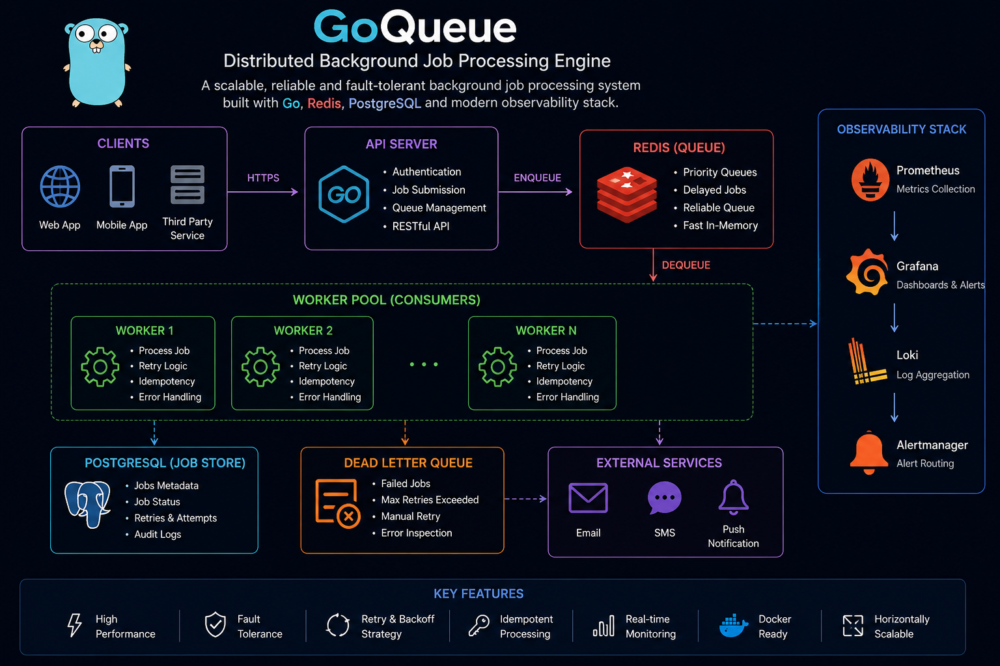
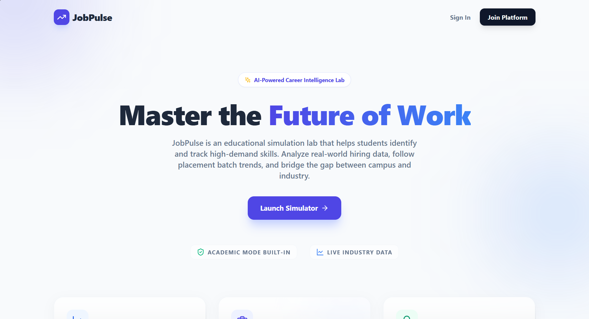

Projects

GoQueue - Distributed Background Job Engine
A production-grade distributed background job processing engine
inspired by Sidekiq and BullMQ, built for reliable asynchronous job
execution at scale.
✅ Built using Go, Redis, PostgreSQL & Docker
✅ Supports priority queues, delayed jobs & concurrent worker pools
✅ Implemented retry orchestration, DLQ, visibility timeouts & idempotency
✅ Integrated Prometheus, Grafana & structured logging for observability
✅ Load tested with k6 to 10K concurrent submissions (~2.9K req/sec)
Designed for high throughput, fault tolerance, and horizontal scalability
with zero job loss during failure and recovery scenarios.

Scalable Notification System
A backend-first, distributed notification system designed to
reliably deliver messages across multiple channels.
✅ Built using Node.js, RabbitMQ, Docker, MySQL
✅ Supports Email / SMS / Push channels asynchronously
✅ Implemented retry mechanism with Dead Letter Queue (DLQ)
✅ Designed idempotent consumers to prevent duplicate delivery
✅ Added structured logging for failures and retries
Designed for horizontal scalability and validated using
failure and retry simulations.

JobPulse - Real-Time Job Market Demand Platform
A real-time backend platform that aggregates and analyzes
software engineering job postings to provide insights into current
market demand and hiring trends.
✅ Built using Node.js, Express, PostgreSQL & Redis
✅ Automated ingestion of 100+ job listings daily across
40+ CS roles
✅ Reduced database query latency from ~500ms to ~8ms (98% faster)
using Redis caching
✅ Implemented background workers for asynchronous data
processing
✅ Added per-IP rate limiting (60 req/min) for reliable,
high-concurrency access
Designed for fast data retrieval, scalable backend processing,
and real-time job market analytics.

NAMASTE to ICD-11 Mapping Platform
A full-stack + ML-based healthcare mapping system that links
NAMASTE medical terms with WHO ICD-11 codes to reduce
manual clinical effort.
✅ Built using Node.js, Express.js, Python (Flask)
✅ ML-powered mapping using scikit-learn
✅ Reduced manual work by 65% through automation
✅ Integrated FHIR generation & analytics APIs
Improved mapping accuracy by 40% with data validation and
preprocessing pipelines.

Hotel Discovery and Listing Platform
A production-ready MERN Stack platform built with MVC
architecture for scalable hotel discovery and
management.
✅ Secure authentication using Passport.js with
route protection
✅ Hosts can create & manage listings; users can
browse, view details, and leave reviews
✅ Fully responsive UI with RESTful API integration
and modular codebase for future expansion
Actively tested and publicly deployed — trusted for
delivering a seamless and intuitive user experience.
⚠️ Note: This version focuses on property discovery
and engagement. Booking functionality is not included.
Job Mailer Automation
A Node.js script that automates sending personalized job
application emails using data from a CSV file.
It uses Gmail SMTP for email delivery and logs successful
sends into a MySQL database for tracking.
⚡ Achieves 99.99% success rate if email IDs
are valid
🔄 Reduces manual effort by over 95% in
bulk emailing
📤 Capable of sending 400+ emails in one
session (executes slowly to ensure emails don’t go to
spam)

Probability Calculations
A mini C-based statistical calculator inspired by
NumPy functions.
✅ Computes sums, standard deviations, correlation &
variation for two datasets
✅ Achieved 95%+ accuracy across statistical test
cases
✅ Reduced manual analysis time by 80% vs. traditional
methods
While not a full NumPy replacement, it’s a lightweight C
toolkit and a great foundation for further numerical
computing.
Civil Calculator
A construction material calculator for estimating
brick, cement, sand, aggregate, and steel needs.
✅ Supports wall, slab, beam calculations with M15–M40
concrete mix
✅ Reduced manual effort by 90% with real-time auto
calculations
✅ Ideal for quick planning in small-scale civil
construction
Helps eliminate over/underestimation in early design stages.